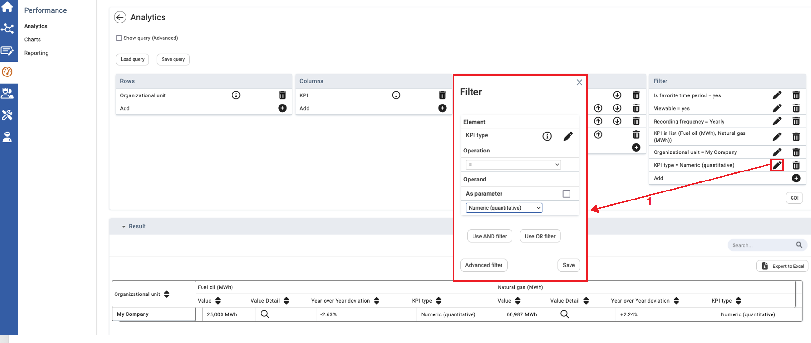

Click  to apply the filter function. A dialog window opens. The filter works like a simple filter.
to apply the filter function. A dialog window opens. The filter works like a simple filter.
Filtering is also possible by using cells. Select this feature if a cell is relevant to only a few columns. In this example, the deviation is displayed only for numeric indicators.

| 1 | Click |